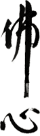
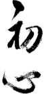
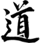
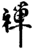
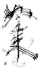
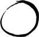

Calligrafia
Su un foglio di carta bianco un pennello si muove rapido e preciso lasciando linee di inchiostro scure, morbide e energiche. L'evocativo rapporto tra pieni e vuoti appare subito chiaro e lo spirito viene rapito: siamo davanti a un'opera di Sho, una calligrafia.
Mentre in Occidente viene associata all'esercizio della "bella scrittura", in Oriente la calligrafia è intimamente legata alla pittura, è una vera e propria arte e come tale è una Via di crescita interiore o Do, in Giapponese. In Estremo Oriente un buon pittore è innanzitutto un buon calligrafo, visto che l'apprendimento delle due avviene parallelamente, usando i medesimi strumenti e rifacendosi ai medesimi principi. Lo scopo è riuscire a trasmettere lo spirito, il senso, l'emozione sul foglio, in modo che le parole calligrafate colpiscano lo spirito di chi le osserva.
Nel suo cammino da Occidente a Oriente lo Zen ha influenzato profondamente l'arte, la cultura e i costumi dei popoli. Dunque, oltre all'architettura, al teatro, alla letteratura e alle arti marziali, anche la pittura e la calligrafia ne hanno ricevuto una forte impronta. Molte di queste arti sono state importate in Giappone dagli stessi monaci zen che le praticavano nei monasteri come attività ordinarie. Ed è stato lo Zen a trasformarle in vere e proprie Vie dando loro quei codici che si estendono ben oltre il puro senso estetico fino a coinvolgere l'essere nella totalità della sua esistenza.

Mente di buddha

Mente di principiante

Tao

Zen

Nyorai
Caratteri nyorai (tathagata) tracciati da Suzuki-Roshi con una foglia di yucca.

Enso
Cerchio vuoto - simbolo dello Zen.